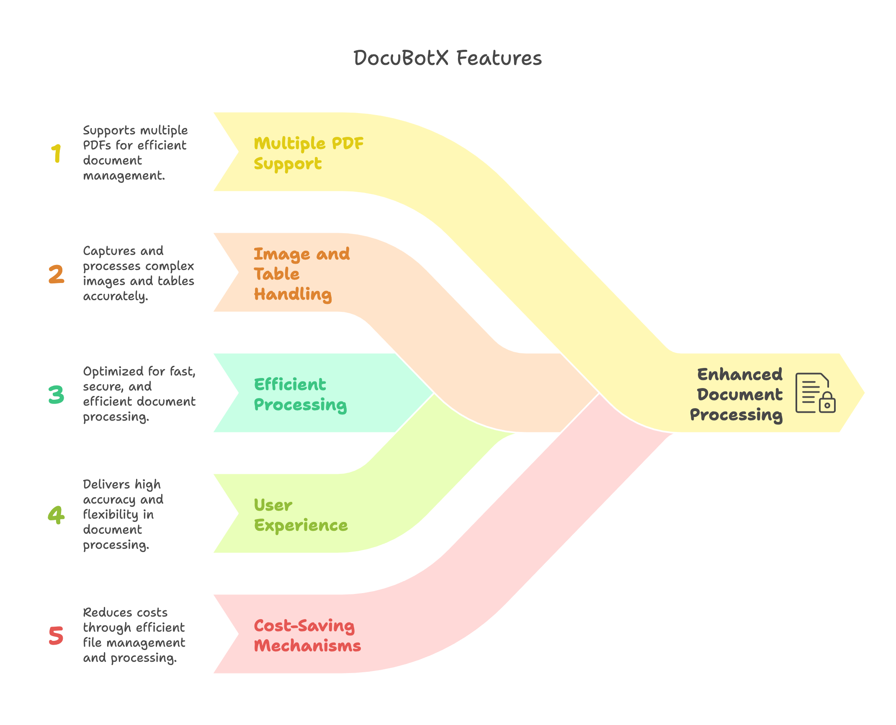
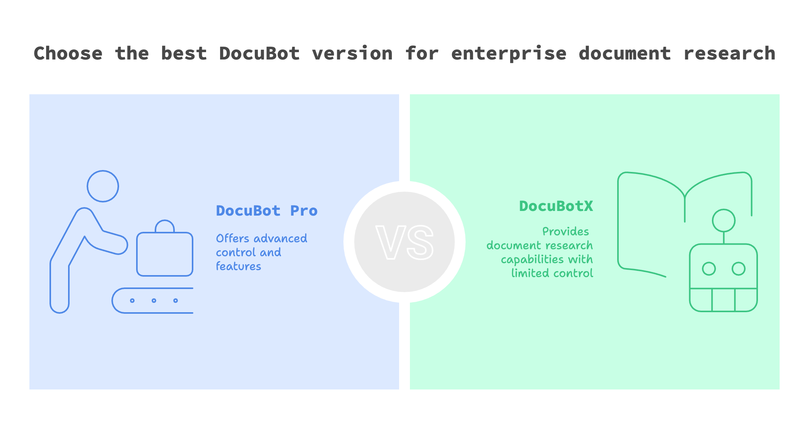

DocuBotX - Your AI Copilot for Document Research
DocuBotX
An advanced AI assistant designed to enhance your document research process. By leveraging cutting-edge technology, DocuBot streamlines and optimizes your workflow, allowing you to focus on more critical tasks while saving time and resources. Think of it as your AI copilot for document research, assisting with data analysis, and synthesis.

DocuBot Pro
DocuBot Pro is the advanced version of DocuBotX designed for enterprises, offering enhanced control over document research.

Feel free to reach out if you'd like to explore building a customized version for your enterprise. To request access, please submit your request for copilot access.